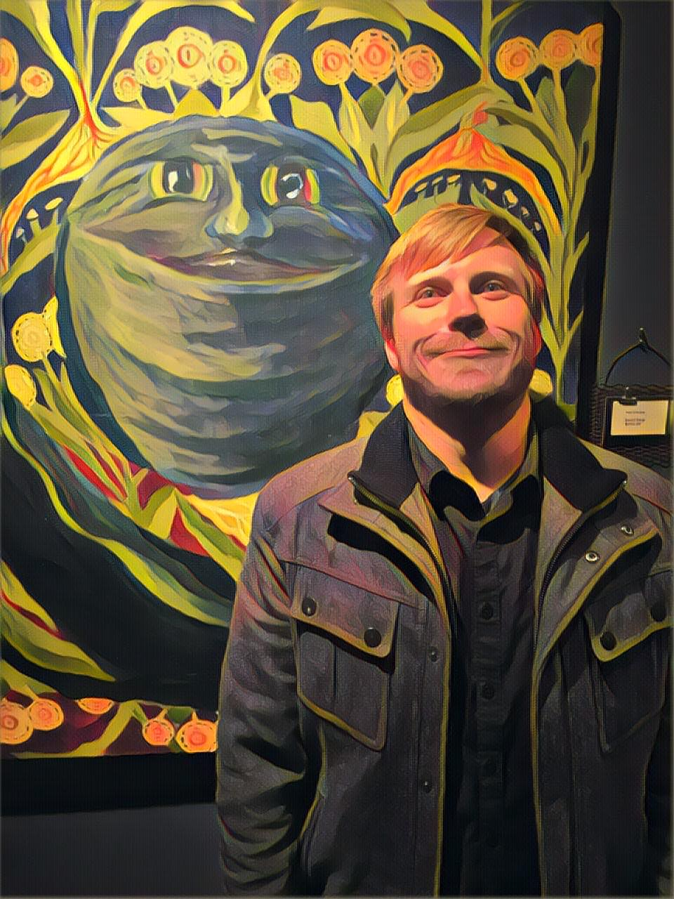
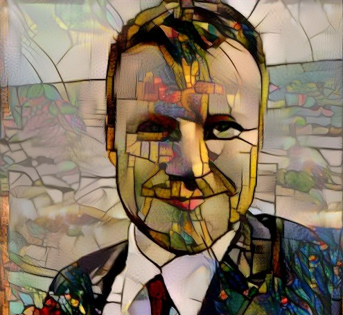

Dana MillerCSE 5912 Personal SiteComputer Science and Engineering Student at OSU. |
I'm a senior at The Ohio State University majoring in Computer Science and Engineering. I have experience working in agile environments and enjoy meeting and working with new people. I'm interested in learning new technologies and methodologies to better help people accomplish their goals, such as how virtual reality can be applied for education or training purposes. In my final year of college I hope to learn more about virtual reality and the cloud.
|  |  | |
|
This photo was put through the Prisma Mononoke filter. I especially enjoy the lightning-like effects. |
This photo was taken at the Shadowbox, a comedy club, and put through the Prisma Thota Vaikuntam filter. I chose this filter because it's effect is similar to the style of the painting. |
This photo was taken at my brother's wedding and put through the stained glass trained filter at deepart.io. I really enjoy the aesthetic of stained glass, and the original photo is one of my favorites of myself. |